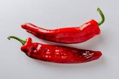

Cabai
Cabai adalah tumbuhan dari genus Capsicum dalam keluarga Solanaceae, memiliki sejarah panjang sebagai tanaman asli Amerika Tengah dan Selatan. Tanaman cabai, yang dapat tumbuh sebagai semak atau tanaman tahunan, dikenal dengan buahnya yang memiliki rasa pedas yang khas, yang disebabkan oleh keberadaan senyawa kimia bernama capsaicin. Capsaicin ini, yang terutama terdapat di biji dan membran buah, memberikan tingkat kepedasan yang berbeda antar varietas. Berbagai varietas cabai menawarkan keanekaragaman ukuran, bentuk, dan warna buah. Misalnya, cabai merah besar, cabai rawit, cabai hijau, cabai kuning, dan cabai jalapeño adalah beberapa jenis yang umum. Setiap varietas memiliki karakteristik unik, seperti kepedasan yang bervariasi, bentuk buah yang khas, dan warna yang mencolok. Tanaman cabai tumbuh baik di berbagai kondisi iklim, meskipun suhu yang hangat mendukung pertumbuhan optimalnya. Kelembaban tanah yang moderat dan sinar matahari yang cukup juga memainkan peran penting dalam kultivasinya. Proses pertumbuhan dan perkembangan cabai dari benih hingga buah matang melibatkan perawatan yang cermat, termasuk pemilihan benih berkualitas, pemeliharaan lingkungan yang optimal, dan pengelolaan penyakit. Dalam konteks kuliner, cabai menjadi salah satu bumbu yang paling populer di dunia. Keberagaman rasa dan kepedasannya membuat cabai menjadi elemen kunci dalam berbagai masakan global. Selain itu, cabai juga memiliki nilai nutrisi, menyediakan vitamin A dan C. Dengan segala keunikan dan kontribusinya, cabai tidak hanya memberikan pengalaman rasa yang menarik, tetapi juga mencerminkan keanekaragaman budaya dan kuliner di berbagai belahan dunia.Klasifikasi Cabai
Tanaman cabai termasuk dalam genus Capsicum dan keluarga Solanaceae. Berikut adalah klasifikasi cabai hingga tingkat familia:
- Kingdom: Plantae (Tumbuhan)
- Divisi: Angiospermae (Tumbuhan berbunga)
- Kelas: Magnoliopsida (Dicotyledoneae, tumbuhan berkeping dua)
- Order: Solanales
- Familia: Solanaceae (familia teratai-terataian)
Dalam familia Solanaceae, genus Capsicum mencakup beberapa spesies cabai yang umumnya dikenal. Contohnya termasuk:
- Capsicum annuum: Mengandung berbagai varietas cabai seperti cabai merah besar, cabai hijau, dan cabai kuning.
- Capsicum frutescens: Mengandung varietas cabai rawit dan cabai jenis lain yang cenderung memiliki rasa pedas yang lebih intens.
Setiap spesies dan varietas cabai memiliki ciri-ciri khusus yang membedakan satu sama lain, termasuk bentuk buah, warna, tingkat kepedasan, dan karakteristik pertumbuhan. Klasifikasi ini membantu para peneliti, petani, dan ahli botani untuk mengidentifikasi, mengkategorikan, dan memahami kelompok tanaman ini dengan lebih baik.
Tips Perawatan
- Lokasi Penanaman: Pilih lokasi yang terkena sinar matahari penuh, minimal 6-8 jam per hari.
- Pengendalian Hama dan Penyakit: Perhatikan tanda-tanda serangan hama seperti kutu dan ulat serta penyakit seperti penyakit daun atau penyakit akar.
- Pemeliharaan Tanah: Berikan tanah yang subur dan kaya nutrisi dengan menggunakan pupuk organik sebelum tanam.
- Irigasi yang Tepat: Cabai membutuhkan penyiraman yang konsisten, terutama selama periode berbunga dan pembentukan buah.
- Dukungan Tanaman: Pemasangan penyangga atau dukungan untuk tanaman cabai yang tinggi seperti cabai merah besar dapat mencegah robohnya tanaman dan mendukung perkembangan buah.